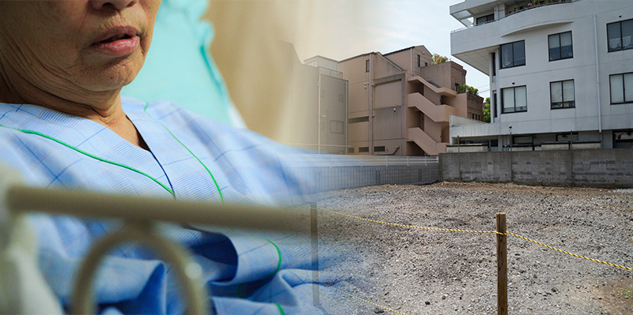

今回の相談者は、神奈川県の小田原市に住むＹ子さんと、お母さんのＳ子さんです。一人っ子のＹ子さんは両親と３人で暮らしていましたが、成人してからは実家から車で１５分ほど離れたマンションで一人暮らしをしています。数年前にお父さんが病気で亡くなったため、Ｓ子さんは実家に一人で暮らしています。
今年で７８歳になるＳ子さんは、若いころは夫婦共働きで頑張って働いてお金を貯め、４０数年前にＹ子さんが産まれたのをきっかけに土地を購入し、今の実家を建てました。その１０年後に、景気が良かったタイミングで、借金をして近所の土地を購入し、アパートを建設。お父さんがサラリーマンとして働くかたわら、Ｓ子さんはＹ子さんを育てながらアパート経営をスタートしたのでした。
じつはＳ子さんがアパート経営をはじめるにあたって頼りにしたのが、鈴木さんが当時勤めていた不動産管理会社でした。ここから鈴木さんとの縁がはじまり、その後鈴木さんはＳ子さんのアパートの管理一切を任されることになり、定期的に付き合いが続いていました。
アパート経営もおおむね順調に進み３０年のローンを完済できたのが去年のことでしたが、ちょうどその直後にＳ子さんは散歩中に転んでしまい、大腿骨を骨折。治療のため２ヶ月ほど入院することになりました。しかし高齢であったため、それをきっかけに足腰が弱り、半分寝たきりになってしまったため、入院生活の継続を余儀なくされました。
寝たきりになると生活が単調になることも影響したのか、Ｓ子さんは、自分の物忘れが激しくなってきたことに気づきました。「このままだとボケてしまうかもしれない…」Ｓ子さんはそんな不安を、たまたまアパートの管理状況の報告で月に１度訪れていた鈴木さんに打ち明けました。

鈴木さんはＳ子さんから聞いた話をもとに「このままでは相続の問題が発生する可能性がある」ことに気づきました。そして、さっそく不動産相続解決センターのコンサルタント・税理士・弁護士・司法書士等による解決チーム内でアドバイスプランをまとめ、娘のＹ子さんへコンタクトを取ることにしました。
Ｙ子さんにとって、鈴木さんは「母が所有するアパートを管理してくれている人」でした。その鈴木さんから「お母さんのご病気と相続のことで」話がある、と聞かされたＹ子さんは、最初は何のことを言っているかわからなかった、と話し始めました。
「最初は、鈴木さんが何のことを言ってるのか、全く、ちんぷんかんぷんでした。何しろ、相続なんて、これまでに一度も気にしたこともないし、もちろん母とのあいだで話に出たことも一度もなかったですから。だから一番驚いたのが、母が、自分の相続のことについてずいぶん前から鈴木さんに相談していて、きっちり相続のプランを整理してたってことです。前から、母は、家事もちゃんとやるしアパートの経営もちゃんとやるし、すごい人だなって思ってたんですけど、相続のことまで全部整理してたのか、って。しかも鈴木さんが実は相続のプロだったのか、ってこともですけど、驚きだらけでした。ほんとに。何も知らないのは自分だけだったんだな、って。」
Ｓ子さんは、ケガで入院してしまう数ヶ月前、アパートの借金の完済の目処がついた頃に、鈴木さんに自分の相続の相談をしていたのでした。実家の土地と建物、アパートの土地と建物、アパートの経営権、そして少しの借金など、すべての相続財産について整理をし、相続税対策のプランも設計し、来るべきタイミングが来たらＹ子さんに話そう、と話し合っていたのでした。
鈴木さんは、Ｓ子さんの財産と相続プランについて、ひとつひとつ丁寧にＹ子さんに説明したうえで、今回持ち上がってきた２つの問題について説明を始めました。
まず鈴木さんが指摘した問題の１つ目は、Ｓ子さんが住まなくなったため空き家になってしまった実家のことでした。
「脚の骨を折って入院したときは、治ればまた実家に戻ってこれるね、って言ってたんですけど、結果的に寝たきりになってしまったので、病院にせよ老人ホームにせよ、そういうところでずっと暮らすほうが母自身も私も安心だねって、母と話し合ったんです。でもそうすると、相続…つまり母が亡くなるときに、実家が誰も住んでいない空き家になってしまうので、相続税がすごくかかってしまう（※１）、ということを鈴木先生から言われたんですよ。」
※１：「小規模宅地等の特例」が受けられなくなるため
「でも私は、できれば今住んでいるマンションに住み続けたい…、わがままだってわかってるんですが、そういう相談をしたら、鈴木さんは解決策を提示してくださったんですよ。今の自分のマンションに３年以上住んでいて、この条件はクリアしているんですが、その上で、母が亡くなったあとも１０ヶ月以上、実家を所有していればよい、っていう（※２）。もちろん土地を手放すつもりはなかったので、自分の希望にピッタリな解決策でした。鈴木さんはさらに、家を少しリフォームすれば戸建て賃貸でも充分借り手はいる、ということを具体的な例もまじえて教えてくれて。なので、実家の相続とか、家をどう活用するか、とかの問題はすべて解決しました。」
※２：家なき子特例
次に鈴木さんが指摘したもうひとつの問題は、アパートの経営に関することでした。
「わたしはもちろん、お母さんが頑張って続けてきたアパート経営ですから、来る時が来たら自分がしっかり引き継いで、鈴木さんにも助けてもらいながら、できる限りアパート経営を続けるつもりでした。でも鈴木さんが問題視したのはそこではなかったんです。お母さんが生きている間にこそ、問題が生まれる可能性があるって言う話で。」
鈴木さんは「生きている間にこそ生まれる」という問題について、Ｙ子さんにていねいに説明しました。Yさんのお母さんは、残念ではあるが認知症が始まっていること。認知症がこれ以上進むと、法的に意思決定力がないとみなされてしまう可能性が高いこと。そうなると、アパート経営に伴ってもし入居者や第三者との間で何かのトラブルが発生したときに、Ｓ子さんもＹ子さんも為す術がなくなり、全面的に相手の言い分を飲まざるを得なくなってしまうこと。
「鈴木さんから詳しく説明していただいて、ようやく分かりました。ボケちゃっているけど、まだ相続していない、っていう状態が一番危険だっていうことなんですよ。だから、ボケちゃう前に、何かをしなきゃいけない。もちろん私は、どうしたらいいかなんて全く分からなかったんですけど（苦笑）」
そこで鈴木さんが提示した解決策が…
鈴木さんの判断では、いずれＹ子さんがアパートを相続する意思があるのであれば、まだＳ子さんの意識が明瞭なうちにその財産と経営を受け継ぎ、経営のノウハウも含めてスムースに移転するのが最適だという結論でした。
「アパートと土地を普通に貰い受けてしてしまうと、贈与税が２００万円以上かかってしまうらしいんです。でも、鈴木さんの教えてくれた相続時精算課税制度を使えば、贈与のタイミングでは税金がかからないんです。いざ相続のタイミングで、通常の相続税がかかるんですが、鈴木先生にしっかり相続税対策をしていただいているおかげで、相続税はほとんどかからない、っていうんです。何の問題もないですよね。もし、私一人でこの問題に向き合っていたら、本当に右も左も分からないので、どうしようもなかったと思います。」
「一番思うのは、もしちゃんとアパート経営を引き継いでいない状態で母がボケちゃったとしたら、たぶん毎日『何も起こらないでほしい』ってビクビクしてたと思うし、もしかしたら、『早く死んじゃって欲しい』って思っちゃったりしたかもしれない。そういう気持ちになるって悲しいことですよね。だから、そうならないで済んだことに、鈴木先生には、本当に感謝の思いしかありません。」
鈴木さんは最後に語りました。「Ｓ子さんから相続の相談を受けたとき、Ｓ子さんは、一人娘のＹ子さんのことを本当に心配して、自分のことなんかよりも自分が亡くなったあとにＹ子さんが困らないように頼みますよと、そのことばかり口にしてたんですよ。だから私も、Ｓ子さんから受けた恩をＹ子さんにお返ししなきゃと思ったんです」
Ｙ子さんはこれからアパート経営に真剣に取り組むことを決めました。そしてＳ子さんからアパート経営のノウハウを吸収するため、毎日のようにＳ子さんが入院する病院に通うようになりました。
「アパート経営について教えてもらうことも、母の頭の刺激になったんじゃないかと思います。前よりイキイキしてきて、母も『以前ほど物忘れをしなくなった気もする』て言ってて。母とゆっくり話す時間が増えた、それに母の人生のことをたくさん知ることができた、それが何よりうれしい」
（文末注意書き）
※この解決事例はプライバシーに配慮するため、人名・地名・金額などの情報をあえて改変しておりますことをご了承下さい。
※実際のサービスにおいては常に必要に応じて弁護士、司法書士、税理士ほかの有資格者と連携しながら常に法的に適正なサービスを行っております。
※この解決事例に記載した解決方法は全てのお客様に当てはまるわけではありません。似たようなケースでもお客様の置かれた環境や目的に応じて、全く異なる解決策をご提案することもございます。あくまで特定のケースにおける一例として紹介しておりますことをご了承下さい。